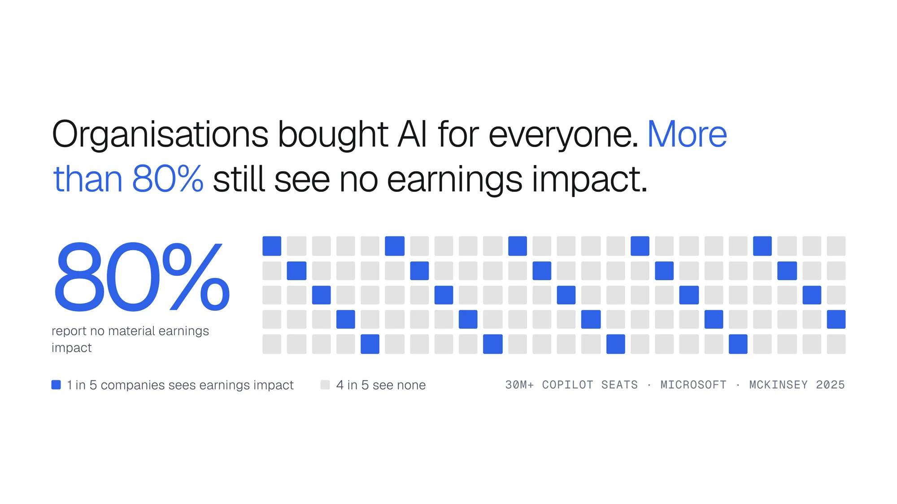
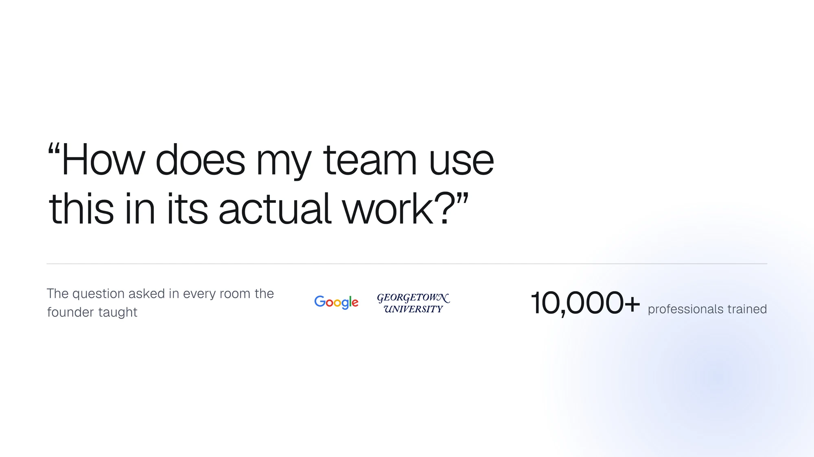
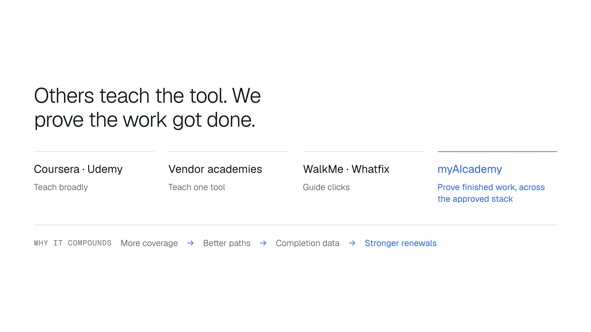

Learn AI.
Apply it at work.
A case study by Ashfaq Imran on designing myAIcademy, the app that teaches professionals AI inside their own job and proves the work got done.
Try the first screen- Role
- Head of Product Design, product and brand end to end
- Platforms
- iOS, Android and web
- Timeline
- 2025 to now
The brief
Companies bought AI licences for everyone. Almost nobody changed how they worked.
myAIcademy set out to be the adoption layer: the part between the licence and the finished work. Not another course library, and not a tour of buttons.
I joined to design the product and the brand from the ground up, across iOS, Android and web, with a founder and two engineers.
The job was to make one loop feel like one product: learn inside your role, practise on real work, and finish beside the tool your company already approves.
Bought for everyone, used by few
80%
of organisations report no material earnings impact from AI. One company in five sees any at all.
That's across more than 30 million Copilot seats alone, according to Microsoft and McKinsey in 2025.
The question in every room
“How does my team use this in its actual work?”
The founder had trained more than 10,000 professionals in person, and the same question came up every time. Employees knew the tool was there. They didn't know what to do inside it.
So the licence was never the hard part. The product had to start from the job, not from the tool.
Where it sits
Others teach the tool. myAIcademy proves the work got done, and the design had to make that difference obvious inside the product, not only in the pitch.
| Who | What they do |
|---|---|
| Coursera, Udemy | Teach broadly |
| Vendor academies | Teach one tool |
| WalkMe, Whatfix | Guide clicks |
| myAIcademy | Proves finished work, across the approved stack |




